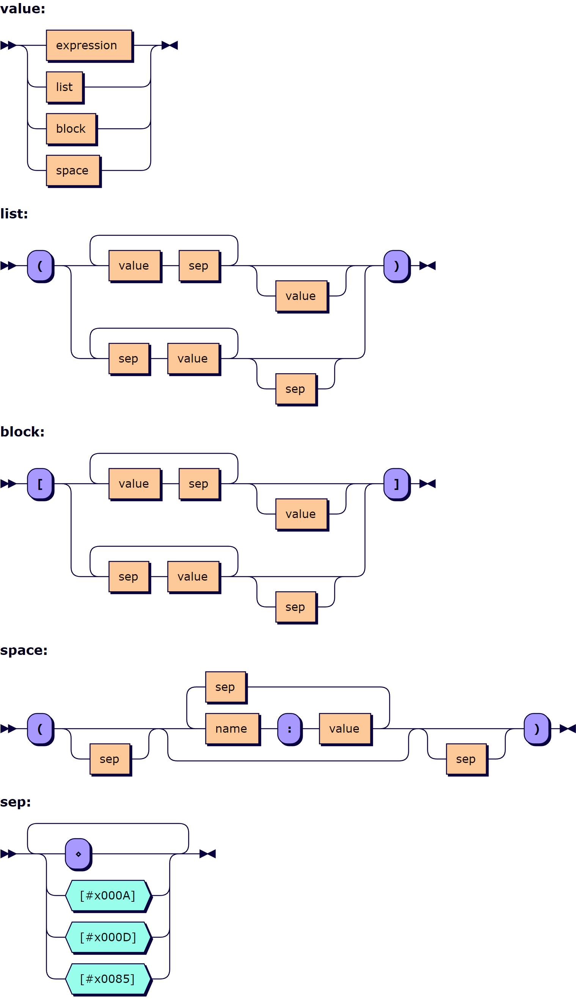

One of the defining features of the APL language is the ability to denote numeric vectors directly through juxtaposition — separating the elements by spaces, as in 0 1 1 2 3 5 8. The notation for character “vectors” is similar to that for “strings” in most other languages, using quotes to denote the start and end of a list of characters. When generalised arrays were added to the language in the early 1980s, the most popular APL dialects extended the vector notation to allow nested arrays to be written using so-called strand notation, allowing the juxtaposition of sub-expressions producing arrays to form a one-dimensional array — as in (2+2) (FOO 42) MAT
Strand notation works well for small, relatively simple one-dimensional arrays. As soon as arrays are too large to be represented on a single line of code, deeply nested, rank greater than one, or (in APL systems that support them) contain namespaces or objects, APL requires the use of primitives or system functions to assemble them from simple components.
The flexibility of the APL language has allowed many APL programmers to work around the issue, either by implementing custom array notations or by using the ability of most APL interpreters to simply store arrays within saved workspaces without having an actual source form of the data. Within specific applications, domain specific notations can be very successful, but readability is poor for anyone not trained in the specific variation used — or who is missing the tooling required to interpret them — as well as sometimes having significant run-time cost.
Recently, the need for a better notation for arrays has grown within the Dyalog APL community:
Dyalog Ltd intends to implement core language support for a notation that makes it possible to write most arrays literally, without requiring the use of primitive functions, over multiple lines of source where this increases readability. It can be used to write nested arrays, and arrays of rank greater than one. The notation also describes many namespaces/objects, providing both inline and anonymous definitions.
Array notations similar to that proposed here are currently supported in some newer implementations such as dzaima/APL and the APL-derivative BQN. Experimental implementations using APL models are available within some tools in the Dyalog eco-system, such as the Link tool which supports the representation of code and data in Unicode text files and the functions Serialise and Deserialise within the namespace ⎕SE.Dyalog.Array. You can also try it out in the interactive online sandbox.
Dyalog is keen to have feedback from the array language community on the notation proposed here so that we can feel confident about the design, before we proceed with our implementation. Our hope is that we will be able to keep the differences between future array notations within the family of array languages to a minimum.
We will monitor the APL Orchard chatroom, the APL Farm's #apl channel, the r/apl and r/apljk subreddits, and the comp.lang.apl newsgroup for feedback. (See APL Wiki for information about these forums.) In addition, we have created a topic in our own forum. If you prefer not to comment in public, please send comments by e-mail. Dyalog will update the discussion page for APL Wiki's Array notation design considerations article to contain a record of significant feedback.
The fundamental mechanism underlying the proposed notation is to group multiple lines, or statements separated by the traditional APL statement separator (diamond ⋄), within parentheses and square brackets. Statements within parentheses () represent vectors — roughly equivalent to stranding — while statements within square brackets [] represent higher rank arrays, where the vector is subjected to a Mix. The notation also supports namespaces or dictionaries, where zero or more statements in the form name:value are collected within parentheses ().
A very common technique used for array construction in APL is repeated concatenation resulting in the desired value being held in a variable (z in the below examples). Array notation should make it possible to express the complete array directly. In addition, the traditional technique sometimes involves the creation of helper variables as a side effect.
Note that for all Dyalog APL examples, monadic ⊃ is Mix (that is, using ⎕ML←3) for readability outside the Dyalog community.
In the examples below, the traditional method of creating an array is marked Ⓣ, the proposed APL array notation is marked Ⓐ, and the minimal-style boxed display output (as provided by ]disp and disp from the dfns workspace) is marked Ⓑ.
| Vector of numeric vectors on a single line | |
|---|---|
(0 6 1 8) (1 4 1 4 2) (2 7 1 8 2 8) (3 1 4 1 5) | Ⓣ |
(0 6 1 8 ⋄ 1 4 1 4 2 ⋄ 2 7 1 8 2 8 ⋄ 3 1 4 1 5) | Ⓐ |
┌───────┬─────────┬───────────┬─────────┐ │0 6 1 8│1 4 1 4 2│2 7 1 8 2 8│3 1 4 1 5│ └───────┴─────────┴───────────┴─────────┘ | Ⓑ |
| Vector of numeric vectors split over two lines | |
|---|---|
z← (0 6 1 8) (1 4 1 4 2) z,←(2 7 1 8 2 8) (3 1 4 1 5) | Ⓣ |
(0 6 1 8 ⋄ 1 4 1 4 2 2 7 1 8 2 8 ⋄ 3 1 4 1 5) | Ⓐ |
┌───────┬─────────┬───────────┬─────────┐ │0 6 1 8│1 4 1 4 2│2 7 1 8 2 8│3 1 4 1 5│ └───────┴─────────┴───────────┴─────────┘ | Ⓑ |
| Vector of character vectors, one on each line | |
|---|---|
z← ⊂'Three' z,←⊂'Blind' z,←⊂'Mice' | Ⓣ |
('Three'
'Blind'
'Mice') | Ⓐ |
┌─────┬─────┬────┐ │Three│Blind│Mice│ └─────┴─────┴────┘ | Ⓑ |
| Numeric matrix | |
|---|---|
z←⍉⍪0 6 1 8 z⍪← 1 4 1 4 z⍪← 2 7 1 8 z⍪← 3 1 4 2 | Ⓣ |
[0 6 1 8 1 4 1 4 2 7 1 8 3 1 4 2] | Ⓐ |
0 6 1 8 1 4 1 4 2 7 1 8 3 1 4 2 | Ⓑ |
| Column matrix | |
|---|---|
z←⍪⊂'Three' z⍪←⊂'Blind' z⍪←⊂'Mice' | Ⓣ |
[⊂'Three' ⊂'Blind' ⊂'Mice']or
[('Three'⋄)
('Blind'⋄)
('Mice' ⋄)] | Ⓐ |
┌─────┐ │Three│ ├─────┤ │Blind│ ├─────┤ │Mice │ └─────┘ | Ⓑ |
| Vector of matrices | |
|---|---|
a←⍉⍪0 0 1 a⍪← 1 0 1 a⍪← 0 1 1 z←,⊂a a←⍉⍪0 1 1 a⍪← 1 1 0 a⍪← 0 1 0 z,←⊂a a←⍉⍪0 1 1 1 a⍪← 1 1 1 0 z,←⊂a a←⍉⍪0 1 1 0 a⍪← 1 0 0 1 a⍪← 0 1 1 0 z,←⊂a | Ⓣ |
([0 0 1 1 0 1 0 1 1] [0 1 1 1 1 0 0 1 0] [0 1 1 1 1 1 1 0] [0 1 1 0 1 0 0 1 0 1 1 0]) | Ⓐ |
┌─────┬─────┬───────┬───────┐ │0 0 1│0 1 1│0 1 1 1│0 1 1 0│ │1 0 1│1 1 0│1 1 1 0│1 0 0 1│ │0 1 1│0 1 0│ │0 1 1 0│ └─────┴─────┴───────┴───────┘ | Ⓑ |
| Table with numeric and text columns | |
|---|---|
z←⍉⍪0 'OK' z⍪← 1 'WS FULL' z⍪← 2 'SYNTAX ERROR' z⍪← 3 'INDEX ERROR' z⍪← 4 'RANK ERROR' | Ⓣ |
[0 'OK' 1 'WS FULL' 2 'SYNTAX ERROR' 3 'INDEX ERROR' 4 'RANK ERROR'] | Ⓐ |
┌─┬────────────┐ │0│OK │ ├─┼────────────┤ │1│WS FULL │ ├─┼────────────┤ │2│SYNTAX ERROR│ ├─┼────────────┤ │3│INDEX ERROR │ ├─┼────────────┤ │4│RANK ERROR │ └─┴────────────┘ | Ⓑ |
| Rank 3 numeric array | |
|---|---|
a←⍉⍪3 1 4 a⍪← 1 5 0 b←⍉⍪2 7 0 b⍪← 2 0 0 z←a,[0.5]b | Ⓣ |
[[3 1 4 1 5 0] [2 7 0 2 0 0]] | Ⓐ |
3 1 4 1 5 0 2 7 0 2 0 0 | Ⓑ |
| Rank 3 numeric array relying on automatic padding with fill element | |
|---|---|
a←,⊂3 1 4 a,←⊂1 5 a←⊃a b←,⊂2 7 b,← 2 b←⊃b z←⊃a b | Ⓣ |
[[3 1 4 1 5] [2 7 2]] | Ⓐ |
3 1 4 1 5 0 2 7 0 2 0 0 | Ⓑ |
| Matrix of simple and nested vectors, with dynamic values | |
|---|---|
z←⍉⍪'fns' ((0 1)(0.7 0)(0.7 0)×size) z⍪← 'fnd' ((0 1)(0 0)(0 0)×size) z⍪← 'lines'((0 0)(0.7 0)(0.7 0)×size) z⍪← 'lnd' ((0 0)(0 0)(0 0)×size) | Ⓣ |
['fns' ((0 1 ⋄ 0.7 0 ⋄ 0.7 0)×size) 'fnd' ((0 1 ⋄ 0 0 ⋄ 0 0)×size) 'lines'((0 0 ⋄ 0.7 0 ⋄ 0.7 0)×size) 'lnd' ((0 0 ⋄ 0 0 ⋄ 0 0)×size)] | Ⓐ |
The last of the above examples shows the use of an embedded computation — using multiplication and a reference to an external variable. Although this can be extremely useful within an application, systems can prohibit this when reading external source files, to avoid code injection attacks (in the same way that macros can be disabled when loading text documents and spreadsheets).
In the examples below, the traditional method of creating an object is marked Ⓧ for APLX and Ⓓ for Dyalog APL, while the proposed APL array notation is marked Ⓐ. In addition, the closest JavaScript equivalent is marked Ⓙ.
| Empty namespace | |
|---|---|
∇z{}∇ | Ⓧ |
⎕NS⍬ | Ⓓ |
() | Ⓐ |
{} | Ⓙ |
| Vector of namespaces | |
|---|---|
⍎¨⎕FX¨('a{' '}')('b{' '}')('c{' '}') | Ⓧ |
⎕NS¨⍬⍬⍬ | Ⓓ |
()()()or (() ⋄ () ⋄ ()) | Ⓐ |
[{},{},{}] | Ⓙ |
| Namespace with character vector member | |
|---|---|
∇z{
x←'hello'
} | Ⓧ |
z←⎕NS⍬ z.x←'hello' | Ⓓ |
(x:'hello') | Ⓐ |
{x:'hello'} | Ⓙ |
| Namespace with character matrix member | |
|---|---|
∇z{
x←⊃'hello' 'world'
} | Ⓧ |
z←⎕NS⍬ z.x←⍉⍪'hello' z.x⍪← 'world' | Ⓓ |
(x:['hello'
'world']) | Ⓐ |
{x:['hello',
'world']} | Ⓙ |
| Nested namespace structure with matrix member | |
|---|---|
∇a{
x←⊃'hello' 'world'
}
∇b{
y
}
z←⎕NEW b
z.y←a | Ⓧ |
z←⎕NS⍬ z.y←⎕NS⍬ z.y.x←⍉⍪'hello' z.y.x⍪← 'world' | Ⓓ |
(y:(x:['hello'
'world'])) | Ⓐ |
{y:{x:['hello',
'world']}} | Ⓙ |
| Namespace with multiple members | |
|---|---|
∇z{
FirstName←'Wolfgang'
LastName←'Mozart'
Age←35
} | Ⓧ |
z←⎕NS⍬ z.FirstName←'Wolfgang' z.LastName←'Mozart' z.Age←35 | Ⓓ |
(
FirstName:'Wolfgang'
LastName:'Mozart'
Age:35
) | Ⓐ |
{
FirstName:'Wolfgang',
LastName:'Mozart',
Age:35
} | Ⓙ |
The notation consists of syntax that was invalid in every mainstream APL implementation before its introduction, thus causing no issues for backwards compatibility. The added syntax consists of these constructs that are currently SYNTAX ERRORs:
(…)[…]()where broken means interrupted by one or more statement separators (diamonds ⋄ or line breaks).
:) from a preceding valid APL identifier.
(⎕NS 0⍴⊂'') or shorthand (⎕NS⍬).:) and a value expression§.* A mixture of name–value pairs and value expressions is an error.
† Besides for system values like ⎕IO.
‡ For reasons explained below under Minimum rank of items in square brackets, it is proposed that a minimum rank of 1 is imposed on each cell within square brackets. At the time this document was written, the array notation in dzaima/APL did not implement this rule.
§ See below under Additional content types in namespaces for details on values that are not given as value expressions.
Statement separators encapsulated in a direct function/dfn/lambda {} or further contained in array notation do not contribute to a parenthesis or bracket being considered broken. For example, in ({1=⍵:'y' ⋄ 'n'}?2) the ⋄ belongs to the inner function/dfn/lambda curly braces, and therefore cannot affect the surrounding parenthesis.
The array notation can be described using Extended Backus–Naur form, where an expression is any traditional APL expression:
value ::= expression | list | block | space
list ::= '(' ( ( value sep )+ value? | ( sep value )+ sep? ) ')'
block ::= '[' ( ( value sep )+ value? | ( sep value )+ sep? ) ']'
space ::= '(' sep? ( name ':' value ( sep name ':' value )* )? sep? ')'
sep ::= [⋄#x000A#x000D#x0085]+
The list of sep values is for illustration purposes and is to match the line breaks recognised by the APL implementation. However, these three sep values should be handled when reading Unicode text files.

As noted above, the proposal suggests that each item within square brackets is coerced to a minimum rank of 1 before assembly of the complete array, while the existing implementation in dzaima/APL allows scalars. The argumentation is purely utilitarian: it is significantly easier to write single-column matrices if vectors are assumed. However, utility (or elegance) is an important design consideration for array notation. Allowing statements in square brackets to have rank 0 provides two ways to denote vectors using parentheses and square brackets.
In the following examples, minimum rank of statements in square brackets is indicated as a circled number, with the traditional method of creating an array marked Ⓣ:
| Numeric vector | |
|---|---|
[1 2]or (1 2) | ⓪ |
(1 2) | ① |
z←,1 z,←2 | Ⓣ |
| Numeric column matrix | |
|---|---|
[[1 ⋄ ] [2 ⋄ ]]or [(1 ⋄ ) (2 ⋄ )] | ⓪ |
[1 2] | ① |
z←⍪1 z⍪←2 | Ⓣ |
| Vector of character vectors | |
|---|---|
[⊂'hello' ⊂'world']or
('hello'
'world') | ⓪ |
('hello'
'world') | ① |
z←,⊂'hello' z,←⊂'world' | Ⓣ |
| Column matrix of character vectors | |
|---|---|
[('hello' ⋄ )
('world' ⋄ )] | ⓪ |
['hello' 'world'] | ① |
z←⍉⍪'hello' z⍪← 'world'] | Ⓣ |
The authors expect the literal notation for namespaces to become widely used at runtime. Contrast this with the notation for nested or high rank arrays, which we envision mainly as a mechanism for representing arrays that are part of an application or used during its initialisation.
For use within an application at runtime, the ability to define values in literal namespaces in terms of already existing names is extremely valuable. Since the namespace is in the process of being created, it will rarely be useful to reference other namespace members. Furthermore, a namespace should be considered unordered, as opposed to Dyalog's existing :namespace … :Endnamespace notation. The latter is often called a script and is executed in order, just like the script for a theatric play. It is proposed that value expressions should be interpreted as if they were running in the surrounding scope. However, one might want to use temporary variables in the creation of such values, and these should not leak out into the surrounding scope.
Therefore, the proposal is that value expressions are evaluated much as expressions in Dyalog dfns; the surrounding scope is visible, but new names that are created become local to the expression, and are not shared between individual value expressions in the same namespace declaration:
long←'bobby'
short←'jack'
ns←(short:'jill' ⋄ inner:short∘.=short←3↑long)
ns.inner
1 0 1
0 1 0
1 0 1
short ⍝ unaffected by inner assignment
jack
ns.short ⍝ ditto
jill
:Class definitions) as members of namespaces. If such exists, the array notation for namespaces can accommodate it. Direct functions/dfns/lambdas and derived/tacit/point-free functions can be included as member values without additional effor after the : name–value separator, just as they are currently used as values in assignment. Scripted definitons can also be allowed after the : even though they do not otherwise return a result, and traditional defined functions ("tradfns") can be included surrounded by dels ∇ as they often are in function listings:
ns←{
42∊⍵:100
(
dfn:{(+⌿⍵)÷≢⍵}
tacit:+⌿÷≢
obj: :namespace
val←4
:Endnamespace
tradfn: ∇ (y y)←tradfn y
∇
recursive: ∇ 42
)
} 10
ns.tradfn ns.recursive
100 100
Note that it is the final ∇ that disambiguates a function definition from a recursive call, as a value can be computed by a recursive call to the surrounding dfn:
∇ (y y)←tradfn y
∇
y←42
ns←{
42∊⍵:100
(
recursive: ∇(y y)←tradfn y
)
} 10
ns.recursive
100
The apparent double naming in tradfn: ∇ (y y)←tradfn y is necessary because a namespace can have a named reference to a function of a different name. Compare the following code which has worked in Dyalog APL for many years:
∇ (y y)←tradfn y
∇
ns←⎕NS⍬
ns.rename←tradfn
⎕EX'tradfn'
ns.rename 100
100 100
⎕CR'ns.rename'
(y y)←tradfn y
Syntactically, this would make it easy to populate a namespace with a reference to a niladic function:
ns←(
nilad:∇ r←nilad
r←42
∇
)
While it is possible to create such a namespace using current Dyalog APL notation, it requires rather involved code.
name: label, making the following two namespaces equivalent:
(
tradfn:∇(y y)←tradfn y
∇
)
|
⇔ |
(
∇(y y)←tradfn y
∇
)
|
A number of other design questions that have been answered in the process of reaching this proposal are preserved on APL Wiki.
Several people have contributed significant amounts of time to the evolution of an array notation worthy of inclusion as a core component in future APL, adding value to APL notation as a tool of thought. For details, see APL Wiki. We sincerely hope that you will give this proposal your attention and provide feedback.